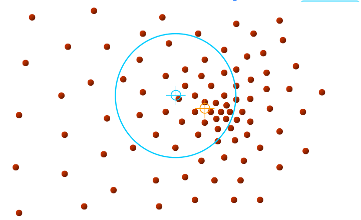
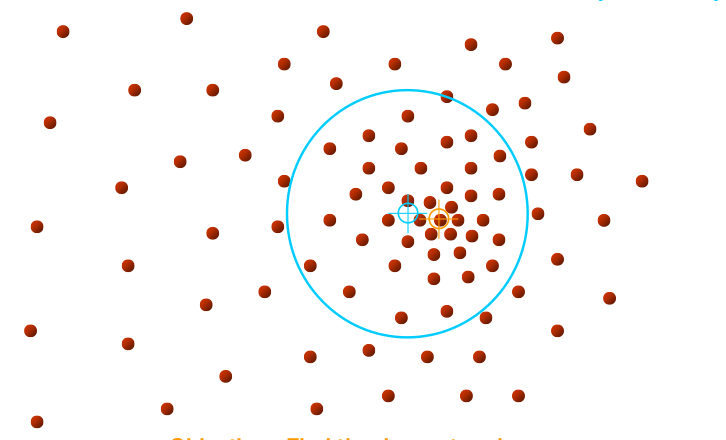
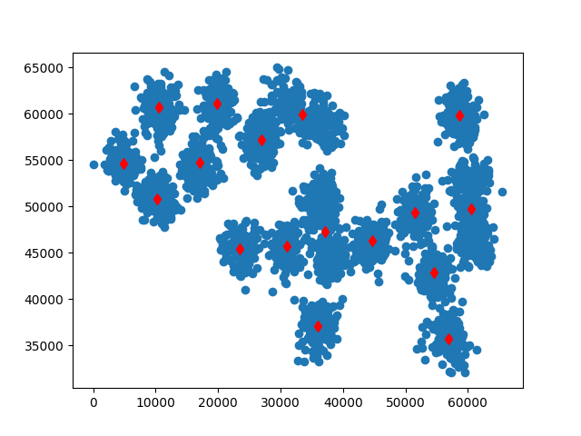

Kümeleme yapmak için bir metot daha: Ortalama Kaydırma metotu. Bu metodun mesela GMM gibi bir metottan farkı, küme sayısının önceden belirtilmeye ihtiyacı olmamasıdır, küme sayısı otomatik olarak metot tarafından saptanır.
“Küme” olarak saptanan aslında veri içindeki tüm yoğunluk bölgelerinin merkezleridir, yani alttaki resmin sağ kısmındaki bölgeler.
Başlangıç neresidir? Başlangıç tüm noktalardır, yani her noktadan başlanarak
O nokta etrafında (yeterince büyük) bir pencere tanımla
Bu pencere içine düşen tüm noktaları hesaba katarak bir ortalama yer hesapla
Pencereyi yeni ortalama noktayı merkezine alacak şekilde kaydır
Metotun ismi buradan geliyor, çünkü pencere yeni ortalamaya doğru “kaydırılıyor”. Altta bir noktadan başlanarak yapılan hareketi görüyoruz. Kaymanın sağa doğru olması mantıklı çünkü tek pencere içinden bakınca bile yoğunluğun “sağ tarafa doğru” olduğu görülmekte. Yöntemin püf noktası burada.


 
 
Eğer yoğunluk merkezine çok yakın bir noktadan / noktalardan başlamışsak ne olur?
O zaman ilerleme o başlangıç noktası için anında bitecek, çünkü hemen yoğunluk merkezine gelmiş olacağız. Diğer yönlerden gelen pencereler de aynı yere gelecekler tabii, o zaman aynı / yakın yoğunluk merkezlerini aynı küme olarak kabul etmemiz gerekir. Bu “aynı küme irdelemesi” sayısal hesaplama açısından ufak farklar gösterebilir tabii, ve bu ufak farkı gözönüne alarak “küme birleştirme” mantığını da eklemek gerekiyor.
Ortalama Kaydırma sisteminde pencere büyüklüğü kullanıcı tarafından tanımlanır. Optimal pencere büyüklüğünü nasıl buluruz? Deneme yanılma yöntemi, verinin tarifsel istatistiklerine kestirme bir hesap (estimate) etmek, ya da kullanıcının aynı istatistiklere bakarak tahminde bulunması. Birkaç farklı pencere büyüklüğü de denenebilir. Bu konu literatürde (İng. bandwidth selection) adı altında uzun uzadıya tartışılmaktadır.
Eğer yoğunluk merkezine çok yakın bir noktadan / noktalardan başlamışsak ne olur?
O zaman ilerleme o başlangıç noktası için anında bitecek, çünkü hemen yoğunluk merkezine gelmiş olacağız. Diğer yönlerden gelen pencereler de aynı yere gelecekler tabii, o zaman aynı / yakın yoğunluk merkezlerini aynı küme olarak kabul etmemiz gerekir. Bu “aynı küme irdelemesi” sayısal hesaplama açısından ufak farklar gösterebilir tabii, ve bu ufak farkı gözönüne alarak “küme birleştirme” mantığını da eklemek gerekiyor.

Altta örnek veri ve kodu bulunabilir. Metot küme sayısı 17’yi otomatik olarak buluyor (gerçek küme sayısı 20, bkz [7] yazısı).
Alternatif bir kod meanshift_alternatıve.py dosyasında
bulunabilir, bu kod pencereler kaydırırken onların üzerinden geçtiği
noktaları “sahiplenen” türden bir kod. Yani [encere hareketini
durdurduğunda hem küme merkezini hem de o kümenin altındaki noktaları
bulmuş oluyoruz. Tabii sonraki pencereler bazı noktaları önceki
kümelerden çalabilirler. Neyse, işlemin normal işleyişine göre bir
sonraki pencere seçilecektir ve bu pencere “geriye kalan noktalar”
üzerinden işlem yapacaktır. Beklenir ki, işlem ilerledikçe işlenmesi
gereken noktalar azalacaktır ve yöntemin bu sebeple klasik yönteme göre
daha hızlı işleyeceği tahmin edilebilir. Hakikaten de böyledir.
from pandas import *
data = read_csv("../algs_080_kmeans/synthetic2.txt",comment='#',header=None,sep=";")
print (data.shape)
data = np.array(data)(3000, 2)plt.scatter(data[:,0],data[:,1])
plt.savefig('meanshift_1.png')
from sklearn.neighbors import NearestNeighbors
import numpy.linalg as lin
def mean_shift(X, bandwidth=None, max_iterations=300):
seeds = X
n_samples, n_features = X.shape
stop_thresh = 1e-3 * bandwidth # when mean has converged
center_intensity_dict = {}
nbrs = NearestNeighbors(radius=bandwidth).fit(X)
# For each seed, climb gradient until convergence or max_iterations
for my_mean in seeds:
completed_iterations = 0
while True:
# Find mean of points within bandwidth
i_nbrs = nbrs.radius_neighbors([my_mean], bandwidth,
return_distance=False)[0]
points_within = X[i_nbrs]
if len(points_within) == 0:
break # Depending on seeding strategy this condition may occur
my_old_mean = my_mean # save the old mean
my_mean = np.mean(points_within, axis=0)
# If converged or at max_iterations, addS the cluster
if (lin.norm(my_mean - my_old_mean) < stop_thresh or
completed_iterations == max_iterations):
center_intensity_dict[tuple(my_mean)] = len(points_within)
break
completed_iterations += 1
# POST PROCESSING: remove near duplicate points
# If the distance between two kernels is less than the bandwidth,
# then we have to remove one because it is a duplicate. Remove the
# one with fewer points.
sorted_by_intensity = sorted(center_intensity_dict.items(),
key=lambda tup: tup[1], reverse=True)
sorted_centers = np.array([tup[0] for tup in sorted_by_intensity])
unique = np.ones(len(sorted_centers), dtype=np.bool)
nbrs = NearestNeighbors(radius=bandwidth).fit(sorted_centers)
for i, center in enumerate(sorted_centers):
if unique[i]:
neighbor_idxs = nbrs.radius_neighbors([center],
return_distance=False)[0]
unique[neighbor_idxs] = 0
unique[i] = 1 # leave the current point as unique
cluster_centers = sorted_centers[unique]
# ASSIGN LABELS: a point belongs to the cluster that it is closest to
nbrs = NearestNeighbors(n_neighbors=1).fit(cluster_centers)
labels = np.zeros(n_samples, dtype=int)
distances, idxs = nbrs.kneighbors(X)
labels = idxs.flatten()
return cluster_centers, labels
cluster_centers, labels = mean_shift(np.array(data), 4000)
print (len(cluster_centers))17plt.scatter(data[:,0],data[:,1])
for x in np.array(cluster_centers): plt.plot(x[0],x[1],'rd')
plt.savefig('meanshift_2.png')
Teorik Konular
Bu metotu teorik bir yapıya oturtmak için onu yazının ilk başındaki resimde olduğu gibi görmek gerekiyor, yani mesela o ilk resmin sağındaki 2 boyuttaki veri dağılımı (ki ayrıksal, sayısal), 3 boyuttaki sürekli (continuous) bir başka dağılımın yansıması sanki, ki o zaman 2 boyuttaki yoğunluk bölgeleri sürekli dağılımdaki tepe noktalarını temsil ediyorlar, ve biz o sürekli versiyondaki tepe noktalarını bulmalıyız. Fakat kümeleme işleminin elinde sadece 2 boyuttaki veriler var, o zaman sürekli dağılımı bir şekilde yaratmak lazım.
Bunu yapmak için problem / veri önce bir Çekirdek Yoğunluk Kestirimi (Kernel Density Estimation -KDE-) problemi gibi görülüyor, ki her nokta üzerine bir çekirdek fonksiyonu koyularak ve onların toplamı alınarak sayısal dağılım pürüzsüz bir hale getiriliyor. Ortalama Kaydırma için gerekli kayma “yönü” ise işte bu yeni sürekli fonksiyonun gradyanıdır deniyor (elimizde bir sürekli fonksiyon olduğu için türev rahatlıkla alabiliyoruz), ve gradyan yerel tepe noktasını gösterdiği için o yöne yapılan hareket bizi yavaş yavaş tepeye götürecektir. Bu hareketin yerel tepeleri bulacağı, ve tüm yöntemin nihai olarak sonuca yaklaşacağı (convergence) matematiksel olarak ispat edilebilir.
KDE ile elde edilen teorik dağılım fonksiyonunun içbükey olup olmadığı önemli değil (ki mesela lojistik regresyonda bu önemliydi), çünkü nihai tepe noktasını değil, birkaç yerel tepe noktasından birini (hatta hepsini) bulmakla ilgileniyoruz. Gradyan bizi bu noktaya taşıyacaktır.
Kaynaklar
[1] Babu, Mean-Shift : Theory, http://www.serc.iisc.ernet.in/~venky/SE263/slides/Mean-Shift-Theory.pdf
[2] Thirumuruganathan, Introduction To Mean Shift Algorithm, http://saravananthirumuruganathan.wordpress.com/2010/04/01/introduction-to-mean-shift-algorithm/
[3] Derpanis, Mean Shift Clustering, http://www.cse.yorku.ca/~kosta/CompVis_Notes/mean_shift.pdf
[4] Fisher, Mean Shift Clustering, http://homepages.inf.ed.ac.uk/rbf/CVonline/LOCAL_COPIES/TUZEL1/MeanShift.pdf
[5] Scikit Learn, Documentation, http://scikit-learn.org
[6] Gingold, http://yotamgingold.com/code/MeanShiftCluster.py
[7] Bayramlı, Istatistik, GMM ile Kümelemek